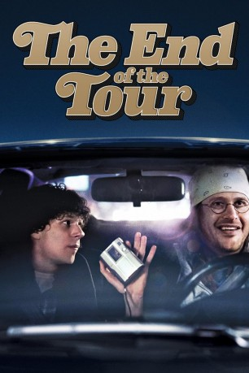

#3349 The End of the Tour
 
 IMDB-Wertung: 7.3 / 10
IMDB-Wertung: 7.3 / 10  Metascore: 82
Metascore: 82 
Der Rolling Stone Journalist David Lipsky (Jesse Eisenberg) bekommt 1996 die Gelegenheit, David Foster Wallace (Jason Segel) fünf Tage lang für ein Interview zu begleiten. Der ist einer der bedeutendsten Autoren der Gegenwart und gerade in den letzten Zügen der Promo-Tour zu seinem Werk "Unendlicher Spaß". Während des mehrtägigen Roadtrips werden die beiden an einem Flughafen eingeschneit, begegnen nervigen Lesern und nehmen an einem Tanz in einer Baptistenkirche teil. Lipsky fängt mehr und mehr an, die widersprüchliche Persönlichkeit des literarischen Genies zu ergründen. Wallace isst bei McDonalds, unterrichtet an der Universität und kämpft trotz seiner großen Erfolge mit Ängsten, Isolation und Depressionen. Ihre gemeinsame Zeit soll in viel mehr als nur einem Interview resultieren.
Jahr: 2015
Dauer: 106 Minuten
FSK: 0
Land: USA Studio: A24Tonspuren: DTS - ,
Untertitel: Deutsch, Englisch,
Auflösung: 1080p (1920x800) Größe: 8581 MB
Genre: Drama, Biographie
Regisseur: James Ponsoldt
Drehbuch: Donald Margulies, David Lipsky
Soundtrack: Danny Elfman
Darsteller:
 Anna Chlumsky als Sarah
Anna Chlumsky als Sarah Jesse Eisenberg als David Lipsky
Jesse Eisenberg als David Lipsky Mamie Gummer als Julie
Mamie Gummer als Julie Jason Segel als David Foster Wallace
Jason Segel als David Foster Wallace Joan Cusack als Patty
Joan Cusack als Patty Ron Livingston als David Lipsky's Editor
Ron Livingston als David Lipsky's Editor Becky Ann Baker als Bookstore Manager
Becky Ann Baker als Bookstore Manager Mickey Sumner als Betsy
Mickey Sumner als Betsy Punnavith Koy als Movie Goer
Punnavith Koy als Movie Goer- Dan John Miller als NPR Host
- Chelsea Anne Lawrence als Aquarium visitor / Dating movie goes
- Rammel Chan als Student #3
- Carrie Bradstreet als Airline Ticket Agent
- Jennifer Jelsema als Hotel Front Desk Clerk
- Noel Fletcher als ISU Student
- Ben Phelps als Mall Shopper
- Gina Ferwerda als Airport Business Traveler
- Alexander Christopher Jones als Bookstore couple
- Scott Stangland als Party Friend 1
- Stephanie Cotton als United Ticket Agent
- Ken Price als Airport Business Traveler
- Alexandra Nedved als Young Woman in Line at Movie Theatre
- Michael Cunningham als Party Attendee
- Stephen C. Forsell als Airport Traveller / Car Rental Patron
- Gerald Wayne Potter als Cab driver
- Tiffany Burns als Airport Business Traveler , uncredited
 Dennis Doyle Jr. als Airport Business Traveler , uncredited
Dennis Doyle Jr. als Airport Business Traveler , uncredited Rosemary Howard als Pedestrian , uncredited
Rosemary Howard als Pedestrian , uncredited- Morgan Rysso als MOA patron by limousine , uncredited
- Joel Thingvall als Movie Theater Usher
- LaTrallo Presley als ISU Student
- Jen Horling als Airport Passenger
 Johnny Otto als Pilot
Johnny Otto als Pilot- Javon Anderson als Student #2
- Jake Hinkley als Movie Patron
- Andy Beningo als Waiter
- Chris Slonske als Airport Traveler
- Victoria Schreur als NPR Intern
- Kim Crozier als Hotel Consierge
- Craig Dukus als NY Party Guest
- Matthew Conrardy als Hotel Customer
- Kyle Jurassic als Airplane Passenger
- Derek Spartz als Movie Patron
- Jennifer Rebecka Holman als Book Store Customer
- Alisha Atallah als Student 1
- John Arden McClure als Nerdy Guy
- Karen Voels als Aquarium Patron / additional scenes
- Russell Delbert Johnson als MOA Food Court Patron
- Marty Fortuna als Rental Car Agent / Airport Passanger
- Jacqueline VanVugt als Airport Passenger
Datei: X:\2015(A-F)\End of the Tour, The (2015, FSK0, 1920x800).mkv seit 16.03.2016
Festplatte: HD 2015(A-Z)
 Es gibt insgesamt 143 Filme in der Gruppe '2015(A-F)'
Es gibt insgesamt 143 Filme in der Gruppe '2015(A-F)'